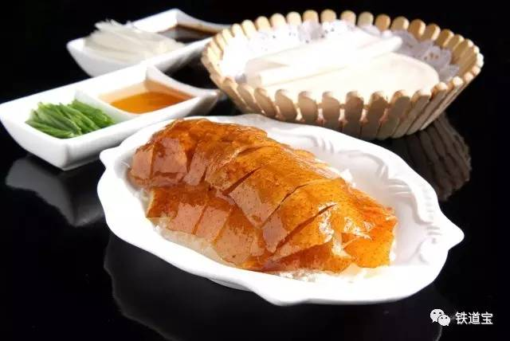

相传，烤鸭之美，是源于名贵品种的北京鸭，它是当今世界最优质的一种肉食鸭。据说，这一特种纯北京鸭的饲养，约起于千年前左右，是因辽金元之历代帝王游猎，偶获此纯白野鸭种，后为游猎而养，一直延续下来，才得此优良纯种，并培育成今之名贵的肉食鸭种。即用填喂方法育肥的一种白鸭，故名“填鸭”。
据说是由大宅门里的太太小姐们兴起的。她们既不吃葱，也不吃蒜，却喜欢将那又酥又脆的鸭皮蘸了细细的白糖来吃。此后，全聚德的跑堂一见到女客来了，便必然跟着烤鸭，上一小碟白糖。
甜面酱加葱条，可配黄瓜条、萝卜条，用筷子挑一点甜面酱，抹在荷叶饼上，放几片烤鸭盖在上面，再放上几根葱条、黄瓜条或萝卜条，将荷叶饼卷起，真是美味无比。
蒜泥加甜面酱，也可配萝卜条等，用荷叶饼卷食鸭肉也是早年受欢迎的一种佐料。蒜泥可以解油腻，将片好的烤鸭蘸着蒜泥、甜面酱吃，在鲜香中更增添了一丝辣意，风味更为独特，不少顾客特别偏爱这种佐料。